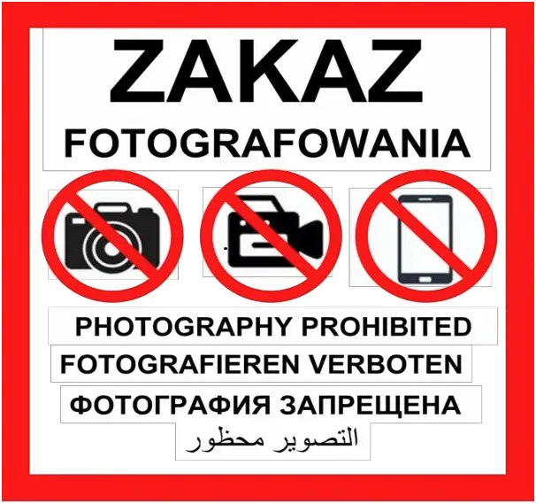
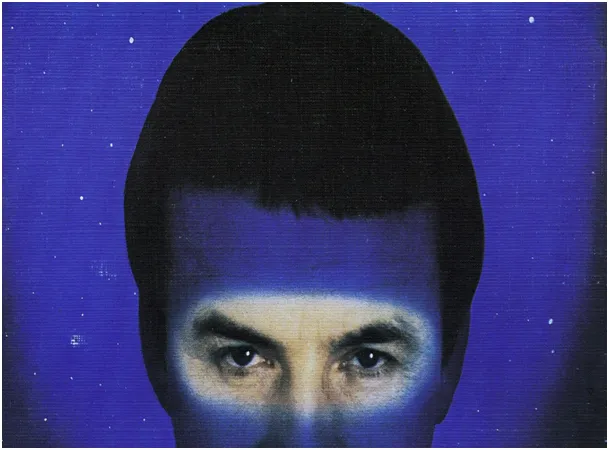
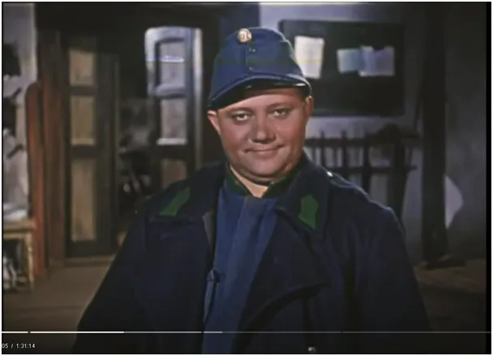
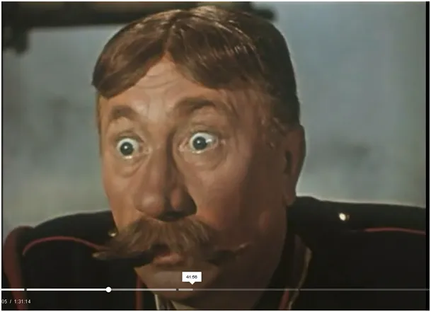
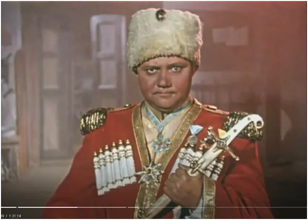
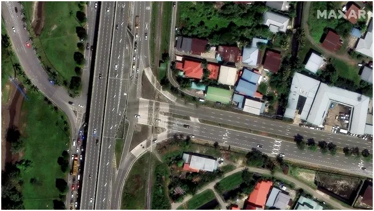

Ale kino, czyli jak nakryć się poduszką, aby przeżyć atak nuklearny.
Znałem już dobrze Szwejka, gdy jako 10-latek byłem po raz pierwszy w ZSRR (Związku Radzieckim). W drodze na wakacje do Bułgarii przejeżdżaliśmy przez liczne przejazdy kolejowe, na każdym spotykaliśmy "dróżnika" z dużym karabinem. Był to widok dla mnie nowy, w PRL prim broń widywaliśmy jedynie w filmach. Broni w życiu publicznym nie było, ale były u nas identyczne jak w ZSRR tabliczki: "zakaz fotografowania", miało to sens w połowie XX wieku, gdy powstawały nowe obiekty infrastruktury mające znaczenie wojskowe. Cały ten świat "Zimnej Wojny" rozpad się w chwili uruchomienia telewizji satelitarnej, gdy świat stał się globalną wiochą, gdzie wszyscy oglądali, co chcieli i zagłuszanie "Radia Wolna Europa" stało się paranoją. Warto sobie uświadomić, że to rewolucja video i TVSat przemieniła Polaków w "konsumentów" zachodnich paciorków. Ludzie przestali myśleć o marności egzystencji w upadającym bloku wschodnim, gdy cały swój wolny czas spędzali oglądając "Dirty Dancing", "Terminatora", "Top gun" , itp.

Pod koniec tej epoki zaczął nadawać Polsat i wtedy w telewizji państwowej rosyjski hipnotyzer Kaszpirowski "leczył" miliony Polaków, którzy dosłownie klęczeli przed telewizorem lub przynajmniej stawiali przed ekranem butelki z wodą, aby ta nabrała dobrej, leczniczej energii. Skala szaleństwa była tak masowa, że z powodu zaprzestania prawdziwych terapii w kolejnych latach przez Polskę przeszła fala nadmiarowych zgonów. To już znamy lepiej...



Trudno w to uwierzyć, ale ta tragikomedia trwa nadal i występują niej te same rekwizyty. Dziś, 17 kwietnia 2025 wchodzi w życie przepis o zakazie fotografowania około 25 tys. obiektów na terenie całego kraju. Zdjęcie na moście na starówce umieszczone na fejsie może być powodem wysokiej grzywny lub aresztu... To nie jest sen wariata, to życie w PRL bis. Ważne "dla obronności obiekty" będą jak w starych, dobrych czasach oznaczone widoczną tablicą. 25 tys. takich tablic to wychodzi ok. 10 na gminę, to jest całkiem przyzwoita akcja billboardowa. Każdego dnia, każdy Polak na własne oczy będzie mógł się przekonać jak wielkie wisi nad nim niebezpieczeństwo i nie przyjdzie mu do głowy, że właśnie nad nim przelatują setki satelitów mogących rozpoznać model jego samochodu.

W kolejnym odcinku jak nakryć się poduszką, aby przeżyć atak nuklearny.
Paweł Klimczewski